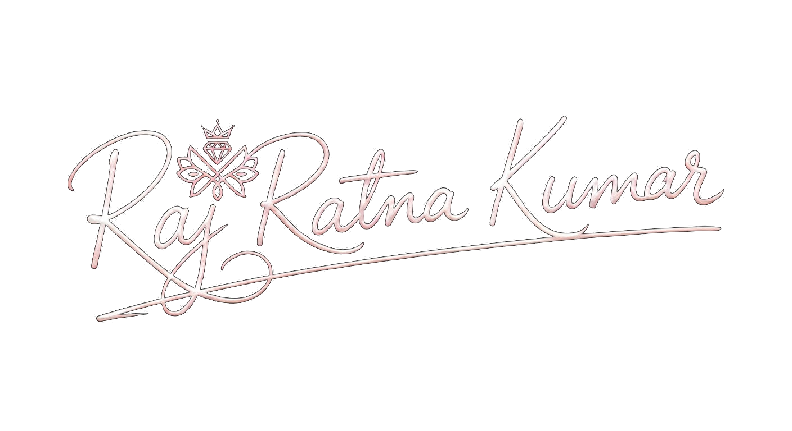

AI-Based Password Cracking Tool
Security analysis · Authentication · Machine learning exploration

A DEVELOPER'S FIELD JOURNAL
A story about learning how systems work — and making something useful out of what I find.
“The future belongs to those who keep learning.”
THE FIRST STEP
I’m Raj Ratna Kumar. I look closer, ask why, and keep moving until the picture starts to make sense.
FOLLOW THE THREAD ↗HELLO, I'M RAJ.
I like understanding how things work — from the details of a user interface to the traces left behind by a digital incident.
Currently pursuing a B.Tech in Computer Science & Engineering (Cyber Security) at NIET. My path combines software development fundamentals with hands-on exposure to cyber forensics and investigation.
I’m interested in building experiences that feel considered, systems that are dependable, and tools that solve real problems.
OPEN THE FIELD NOTES ↗Projects from my software and cybersecurity journey. A mix of completed builds and ongoing exploration.
Security analysis · Authentication · Machine learning exploration
Monitoring system for real-time system and network activity analysis.
Machine-learning techniques to identify suspicious system and network activity.
Encryption-minded file sharing with access management.
A database-driven weather information management system.
GUI-based student management application.
PROJECT DETAILS REFLECT THE INFORMATION PROVIDED IN MY RESUMES.
Completed a one-month cyber forensics internship with IFSO/N-DISC, Delhi Police, assisting with cases involving social media fraud, financial fraud, and IPDR analysis.
IFSO/N-DISC, Delhi Police · 1 month
Noida Institute of Engineering and Technology (NIET) · Pursuing
Eastern Railway Diesel Shed, Jamalpur · Diesel locomotive maintenance
Sant Longowal Institute of Engineering and Technology (SLIET) · Completed
St. Joseph’s School · Completed
Explore my background through either software development or cybersecurity. Both versions are available as PDFs.
Programming, web development, databases, software tools, and application fundamentals.
VIEW RESUME ↗DOWNLOAD PDF ↓Ethical hacking aspirations, forensics tools, case exposure, and security-focused projects.
VIEW RESUME ↗DOWNLOAD PDF ↓HAVE A PROJECT, OPPORTUNITY, OR GOOD QUESTION?
Dream boldly. Build thoughtfully. Secure what matters.